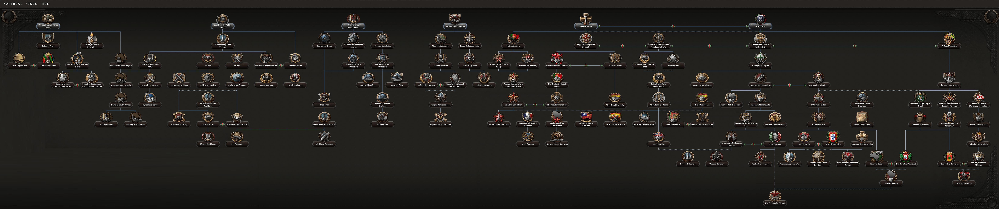
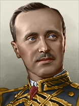
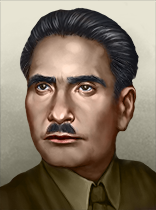

| 陆军科技 | 海军科技 | 空军科技 | 电子与工业 |
|---|---|---|---|
|
|
「无」 没有
|
「无」 |
| 陆军学说 | 海军学说 | 空军学说 |
|---|---|---|
|
「无」 |
「无」 |
「无」 |
原页面：Portugal
 葡萄牙 is a minor country in Western Europe with a population of 6.8 M (core) and an additional 7.72 M (non-core) population. Located on the Iberian peninsula, its mainland is bordered only by
葡萄牙 is a minor country in Western Europe with a population of 6.8 M (core) and an additional 7.72 M (non-core) population. Located on the Iberian peninsula, its mainland is bordered only by  西班牙. Portugal has several colonies scattered around the world including Macau in China, Portuguese Timor in Indonesia, Goa in India, Sao Tome, Cape Verde, Portuguese Guinea, Angola, and Mozambique in Africa.
西班牙. Portugal has several colonies scattered around the world including Macau in China, Portuguese Timor in Indonesia, Goa in India, Sao Tome, Cape Verde, Portuguese Guinea, Angola, and Mozambique in Africa.
With a regicide in 1908 and a republican coup in 1910, the history of Portugal in the 20th century has been anything but stable. Portugal entered the first World War after interning naval vessels of the Central Powers and fought alongside the Entente on the Western Front and in Africa in its colonial holdings. Portugal's losses during the war were far more than her gains, however, political and economic instability continued into the 1920s.
In 1926, a military coup led to the rise of an authoritarian Presidential Dictatorship headed by José Mendes Cabeçadas and then Óscar Carmona, the latter appointing António de Oliveira Salazar as finance minister. The Presidential Dictatorship evolved and ended with the 1933 declaration of the 新国家, or "New State" regime. This new regime, with its basis in Catholic traditionalism and authoritarianism, had instead its power delegated in its new Prime Minister, António de Oliveira Salazar.
Salazar, an economist, constructed the new regime from scratch and largely rebuilt Portugal's economy and Portugal's political system. A Catholic traditionalist, Salazar developed the regime as one with a focus on conservative, nationalistic, authoritarian, and Catholic principles, as well as a staunch anti-communist stance.
In 1936, Portugal enters its third year as the Estado Novo regime, and with massive colonial holdings in Africa, as well as far-away territories such as Macau, Goa, and Timor-Leste under its grasp, the Portuguese Empire remains sizable.

 葡萄牙 gets a unique 国策树 with the
葡萄牙 gets a unique 国策树 with the  La Résistance expansion. Without the expansion, it utilizes the 通用国策树 instead.
La Résistance expansion. Without the expansion, it utilizes the 通用国策树 instead.
The Portuguese national focus tree can be divided into 5 branches and 5 sub-branches:
With the  抵抗运动 DLC enabled, Portugal starts with the following 国家精神:
抵抗运动 DLC enabled, Portugal starts with the following 国家精神:
 葡萄牙开局拥有 2 个可用科研槽；另有 3 个可通过国策树解锁。
葡萄牙开局拥有 2 个可用科研槽；另有 3 个可通过国策树解锁。
| 陆军科技 | 海军科技 | 空军科技 | 电子与工业 |
|---|---|---|---|
|
|
「无」 没有
|
「无」 |
| 陆军学说 | 海军学说 | 空军学说 |
|---|---|---|
|
「无」 |
「无」 |
「无」 |
| 陆军科技 | 海军科技 | 空军科技 | 电子与工业 |
|---|---|---|---|
|
|
「无」 没有
|
|
| 陆军学说 | 海军学说 | 空军学说 |
|---|---|---|
|
|
|
 葡萄牙 为各种科技与装备设有一些独特名称，列于此处。请注意，通用名称不在此列。
葡萄牙 为各种科技与装备设有一些独特名称，列于此处。请注意，通用名称不在此列。
| 类型 | 1918 | 1936 | 1939 | 1942 |
|---|---|---|---|---|
| 步兵装备 | Espingarda m/04 | Espingarda m/04/39 | Bergmann MP28 | FBP m/948 |
| 科技年份 | 轻型（反坦克/自行火炮/防空） | 中型（反坦克/自行火炮/防空） | Modern | 重型 | Super-Heavy |
|---|---|---|---|---|---|
| 1918 | CDC A | ||||
| 1934 | CDC-1（VAT-1／CA-1／无） | TP-I | |||
| 1936 | CDC-2（VAT-2／CA-2／无） | ||||
| 1938 | CDC-3（DT-3／AA-3／无） | ||||
| 1940 | CDC-4（DT-4／AA-4／无） | TP-II | |||
| 1941 | CDC-5（VAT-5／CA-5／无） | TP-IX | |||
| 1943 | CDC-6（DT-6／AA-6／无） | TP-III | |||
| 1945 | CDC-8 | ||||
| 备注：若无一步不退，中型坦克 I 与 II 将推迟一年解锁。 | |||||
 葡萄牙 owns 7 core and 13 colonial states.
葡萄牙 owns 7 core and 13 colonial states.
| 州 | 城市 | 地形（省份数） | 区域 | 是否核心州 | ||
|---|---|---|---|---|---|---|
| 亚速尔群岛 | Ponta Delgada | 3 | 小岛 | 212,012 | ||
| 贝雅 | 贝雅 Faro Portimão Setúbal |
1 1 1 1 |
乡村区 | 777,895 | ||
| Cabinda | Cabinda | 1 | 乡村区 | 25,000 | ||
| Cape Verde | Praia | 1 | 小岛 | 150,600 | ||
| East Timor | Dili | 2 | 牧区 | 455,604 | ||
| Goa | Goa | 1 | 飞地 | 533,952 | ||
| 瓜达 | 瓜达 Viseu |
1 1 |
发达乡村区 | 964,700 | ||
| 里斯本 | Coimbra 里斯本 |
1 20 |
城市区 | 1,995,800 | ||
| Lourenço Marques | Lourenco Marques | 1 | 乡村区 | 1,226,000 | ||
| Luanda | Luanda | 1 | 乡村区 | 1,600,000 | ||
| 澳门 | 澳门 | 1 | 飞地 | 157,805 | ||
| 马德拉 | Funchal | 1 | 小岛 | 211,600 | ||
| Manica e Sofala | – | – | 牧区 | 188,600 | ||
| 波尔图 | Braga 波尔图 |
5 10 |
稀疏城市区 | 1,904,600 | ||
| Portuguese Guinea | Bissau | 1 | 飞地 | 364,900 | ||
| 圣塔伦 | Évora 圣塔伦 |
1 1 |
乡村区 | 729,712 | ||
| 圣多美 | – | – | 微型岛屿 | 24,725 | ||
| South West Angola | Nova Lisboa | 1 | 牧区 | 960,000 | ||
| Zambesi | – | – | 牧区 | 640,000 | ||
| Zambezia-Moçambique | – | – | 牧区 | 1,386,000 |
Portugal in 1936 and 1939 is a  中立主义 nation with no elections.
中立主义 nation with no elections.
Portugal has the following political parties:
| 同上 | 政党名称 | 支持率 | 领袖 | Ruling |
|---|---|---|---|---|
| Aliança Republicana e Socialista | 20% | 何塞·诺顿·德·马托斯 | ||
| Partido Comunista Português | 10% | 本托·贡萨尔维斯 | ||
| Movimento Nacional-Sindicalista | 10% | 弗朗西斯科·德·巴塞洛斯·罗朗·普雷托 | ||
| União Nacional | 60% | 安东尼奥·德·奥利维拉·萨拉查 |
| 同上 | 政党名称 | 支持率 | 领袖 | Ruling |
|---|---|---|---|---|
| Movimento de Unidade Nacional Antifascista | 0% | 何塞·诺顿·德·马托斯 | ||
| Partido Comunista Português | 0% | 本托·贡萨尔维斯 | ||
| Movimento Nacional-Sindicalista | 0% | 弗朗西斯科·德·巴塞洛斯·罗朗·普雷托 | ||
| União Nacional | 100% | 安东尼奥·德·奥利维拉·萨拉查 |
葡萄牙 的可能国家领袖。
的可能国家领袖。
| 意识形态 | 肖像 | 名称 | 党派 | 特质 | 效果 | 可用 |
|---|---|---|---|---|---|---|
Despotism |
安东尼奥·德·奥利维拉·萨拉查 | União Nacional (UN)/Causa Monárquica (CM) | 保守民族主义者 |
|
起始领袖 | |
Despotism |
 |
杜阿尔特·努诺公 | 君主主义事业（CM） | 立宪君主 |
|
can come to power via |
自由主义 |
何塞·诺顿·德·马托斯 | 共和与社会主义联盟（ARS） | 民主改革者 |
|
can come to power via | |
马克思主义 |
本托·贡萨尔维斯 | 葡萄牙共产党（PCP） | 资深共产党人 |
|
can come to power via | |
法西斯主义 |
 |
弗朗西斯科·德·巴塞洛斯·罗朗·普雷托 | 民族工团主义运动（MNS） | 法西斯民兵领袖 |
|
can come to power via |
葡萄牙 的可能国名。
的可能国名。
| 同上 | 国家名称 | Condition |
|---|---|---|
| 最大化主义葡萄牙 | ||
| 大葡萄牙 | ||
| Fifth Portuguese Empire | ||
| Anarchist Commune of Portugal | ||
| [宗主国] 的附属国 |
With  抵抗运动 enabled, Portugal can form the following nations:
抵抗运动 enabled, Portugal can form the following nations:
 葡萄牙 pursues a neutral policy and doesn't involve itself in the hostilities of World War II.
葡萄牙 pursues a neutral policy and doesn't involve itself in the hostilities of World War II.
With  抵抗运动 enabled, there are opinion modifiers towards
抵抗运动 enabled, there are opinion modifiers towards  葡萄牙 from
葡萄牙 from
Additionally,  葡萄牙 has an opinion modifier towards the
葡萄牙 has an opinion modifier towards the  英国:
英国:
Portugal may release:
Portugal may return:
Portugal can core states of it's two African colonies (Mozambique and Angola) through decisions unlocked by the focus  Luso-Tropicalism:
Luso-Tropicalism:
葡萄牙 的部长与军事幕僚。
的部长与军事幕僚。
| 名称 | 特质 | 效果 | 花费（） |
|---|---|---|---|
| Francisco Craveiro Lopes |
军需总监 | 150 | |
| Jaime Cortesão |
工业巨头 | 150 | |
| Jaime Cortesão |
仁慈绅士 |
|
150 |
| Álvaro Cunhal |
共产主义革命者 |
|
150 |
| Raul Brandão |
沉默的实干家 |
|
150 |
| Francisco da Cunha Leal |
沉默的实干家 |
|
150 |
| Bento de Jesus Caraça |
金融专家 |
|
150 |
| Alberto Monsaraz |
国家整合主义者 |
|
150 |
| Maria Lamas |
自由派记者 | 150 | |
| João de Azevedo Coutinho |
筑垒工程师 | 150 | |
| Duarte José Pacheco |
技术官僚 |
|
150 |
| Augusto de Vasconcelos |
仁慈绅士 |
|
150 |
| Augusto de Vasconcelos |
民主改革者 |
|
150 |
| Manuel Gonçalves Cerejeira |
谦卑的绥靖者 |
|
150 |
| José Adriano Pequito Rebelo |
金融专家 |
|
150 |
| João Francisco de Barbosa Azevedo |
传统主义理论家 | 150 | |
| Alfredo da Silva |
工业巨头 | 150 | |
| José Hipólito Raposo | 法西斯煽动家 |
|
150 |
| Fernando dos Santos Costa |
军工实业家 | 150 | |
| Agostinho Lourenço |
神秘绅士 |
|
150 |
| 名称 | 特质 | 效果 | 花费（） |
|---|---|---|---|
| 何塞·曼努埃尔·萨尔门托·德·贝雷斯 | 空战理论家 |
|
100 |
| 何塞·诺顿·德·马托斯 | 军事理论家 |
|
100 |
| 曼努埃尔·奥尔廷斯·托雷斯·德·贝滕库尔特 | 海军理论家 |
|
100 |
| 名称 | 特质 | 效果 | 花费（） |
|---|---|---|---|
| Júlio Botelho Moniz |
陆军改革者（专家） | 100 | |
| Humberto Carmona |
陆军操练（专家） |
|
100 |
| Vieira da Rocha |
陆军进攻（专家） |
|
100 |
| 弗朗西斯科·德·巴塞洛斯·罗朗·普雷托 | 陆军士气（专家） |
|
100 |
| Domingos Oliveira |
老卫队 |
|
100 |
| Lobato Guerra |
陆军防御（专家） |
|
100 |
| 名称 | 特质 | 效果 | 花费（） |
|---|---|---|---|
| Jaime Afreixo | 海军改革者（专家） | 100 | |
| Américo Thomaz | 海军机动（专家） |
|
100 |
| 名称 | 特质 | 效果 | 花费（） |
|---|---|---|---|
| Humberto Delgado | 地面支援（专家） |
|
100 |
| Manuel Gouveia | 航空安全（专家） |
|
100 |
| 名称 | 特质 | 效果 | 花费（） |
|---|---|---|---|
| Francisco Craveiro Lopes |
空战训练（专家） |
|
100 |
| António Óscar Carmona |
陆军后勤（专家） |
|
100 |
| Manuel Quintão Meireles | 舰队后勤（专家） |
|
100 |
| José Filipe de Barros Rodrigues | 火炮（专家） |
|
100 |
| Francisco da Costa Gomes |
步兵（专家） |
|
100 |
| José Adriano Pequito Rebelo |
步兵（专家） |
|
100 |
| 肖像 | 名称 | 特质 | 要求 | |||||
|---|---|---|---|---|---|---|---|---|
| José Vicente de Freitas | 3 | 4 | 2 | 2 | 3 |
| 肖像 | 名称 | 特质 | 要求 | |||||
|---|---|---|---|---|---|---|---|---|

|
José Mendes dos Reis | 3 | 3 | 2 | 3 | 3 |
| |
| Luís Augusto Ferreira Martins | 3 | 2 | 4 | 3 | 4 | |||

|
Raul Augusto Esteves | 3 | 4 | 2 | 2 | 3 |
| 肖像 | 名称 | MNV |
COR |
特质 | 要求 | |||
|---|---|---|---|---|---|---|---|---|

|
Armando Pereira de Castro Agatão Lança | 3 | 2 | 4 | 3 | 2 |
| |
| José Mendes Cabeçadas | 4 | 3 | 2 | 4 | 4 |
| 标志 | 名称 | 类型 | 效果 | 要求 | 花费（） |
DLC |
|---|---|---|---|---|---|---|

|
Companhia União Fabril | 工业财团 |
|
|
150 | |

|
电子连 | 电子学财团 |
|
|
150 |
葡萄牙 的设计公司。
的设计公司。
| 标志 | 名称 | 类型 | 效果 | 要求 | 花费（） |
DLC |
|---|
| 标志 | 名称 | 类型 | 效果 | 要求 | 花费（） |
DLC |
|---|---|---|---|---|---|---|

|
阿尔费特海军兵工厂 | 舰船设计商 |
选择此设计公司后，只要它仍在受雇，就会永久影响其受雇期间研究的所有装备的性能。 |
|
150 |
| 标志 | 名称 | 类型 | 效果 | 要求 | 花费（） |
DLC |
|---|---|---|---|---|---|---|

|
OGMA | 轻型飞机设计商 |
选择此设计公司后，只要它仍在受雇，就会永久影响其受雇期间研究的所有装备的性能。 |
|
150 |
| 标志 | 名称 | 类型 | 效果 | 要求 | 花费（） |
DLC |
|---|---|---|---|---|---|---|

|
Fábrica Nacional de Munições de Armas Ligeiras | 步兵装备设计商 |
|
|
150 | |
|
|
Fabrica de Material de Guerra | 步兵装备设计商 |
|
|
150 | |
| OGME | 摩托化装备设计商 |
|
|
150 | ||

|
Fábrica de Munições de Artilharia, Armamento e Viaturas | 火炮设计商 |
|
|
150 |
 葡萄牙 可使用这些军工产业组织。
葡萄牙 可使用这些军工产业组织。
| ||||||||||||||||||||||||||||||||||||||||||||||||||||||||||||||
| ||||||||||||||||||||||||||||||||||||||||||||||||||||||||||||||||||
| ||||||||||||||||||||||||||||||||||||||||||||||||||||||||||||||||||||||||||||||||||
| ||||||||||||||||||||||||||||||||||||||||||||||||||||||||||||||||||||||||||||||||||||||||||||||||||||||||||||||||||||||||||||||||||||||||||||||||||||||||||||||||||||||||||||||||||||||||||||||||||||||||||||||||||||||||||||||||||||||||||||||||||||||||||||||||||||||||||||||||||||
| 征兵法案 | 贸易法案 | 经济法令 |
|---|---|---|
|
|
|
*1936 年与 1939 年的法案相同。
年份 |
军用工厂 |
海军船坞 |
民用工厂 |
建筑槽位 |
|---|---|---|---|---|
| 1936 | 2 | 3 | 12 (-3) | 34 |
*红色 中的数字表示生产消费品所需的民用工厂数量，依据经济法案以及军用与民用工厂总数向上取整。
年份 |
石油 |
铝 |
橡胶 |
钨 |
钢铁 |
铬 |
煤 |
|---|---|---|---|---|---|---|---|
| 1936 | 0 | 0 | 2 (-1) | 179 (-89) | 0 | 29 (-14) | 5 (-2) |
*这些数字表示游戏开始一小时后可用的资源量。红色 中的数字表示因贸易法案而留作出口的资源量。
| 类型 | # 1936 | # 1939 | |
|---|---|---|---|
| 步兵 | 15 | ||
| 骑兵 | 3 | ||
| 师总数 | 18 | 18 | |
| 已用人力 | 65.00K | 65.00K | |
The size of the Portuguese Army is rather decent but underequipped at the beginning, with only 18 divisions available. While this in itself could be enough to defeat some of the smaller nations in immediate proximity, it is advisable that Portugal build up their forces before attempting full scale war. Especially  共和西班牙 provides as an easy target in the early game.
共和西班牙 provides as an easy target in the early game.
| 师 | 名称列表 | # 1936 | # 1939 | 支援连 | 战斗营 |
|---|---|---|---|---|---|
| 步兵师 | 5 | 5 | 6x | ||
| Caçadores Force | 10 | 10 | 2x | ||
| 骑兵单位 | 3 | 3 | 4x |
| 类型 | # 1936 | # 1939 | |
|---|---|---|---|
| 驱逐舰 | 6 | ||
| 潜艇 | 3 | ||
| 运输船队 | 150 | ||
| 舰船总数 | 9 | 9 | |
| 已用人力 | 2.10K | 2.10K | |
| 类型 | Class | Hull | 发动机 | # 1936 | # 1939 | 设计说明 | ||
|---|---|---|---|---|---|---|---|---|
| DD | Douro | 早期驱逐舰 | 轻型 II | 5 | 5 | 轻型火炮 I、防空炮 I、火控系统 0、鱼雷发射器 I、深水炸弹 I、布雷轨 | ||
| DD | Guadiana* | 早期驱逐舰 | 轻型 I | 1 | 1 | 轻型火炮 I、火控系统 0、鱼雷发射器 I | ||
| SS | Delfim | 基础潜艇 | 潜艇 I | 3 | 3 | 鱼雷发射管 I | ||
| * 标记表示该变体「已过时」。 舰种术语：
| ||||||||
| 类型 | |||||
|---|---|---|---|---|---|
| 战斗机 | 0 | 30 | |||
| 近距空中支援 | 12 | 0 | |||
| 战术轰炸机 | 12 | 20 | |||
| 飞机总数 | 24 | 24 | 50 | 50 | |
| 已用人力 | 720 | 720 | 1.40K | 1.40K | |
葡萄牙 can release 傀儡国: 几内亚比绍, 莫桑比克, 安哥拉, 佛得角民主共和国. These puppets don't have natural resources - but have, all combined, more manpower than mainland Portugal. That means both colonial divisions and 傀儡国's own divisions. 傀儡国 can also complete 通用国策树 for various bonuses.
To start off, the player must annex or puppet Spain. The best time for the player to attack Spain is directly after the Spanish Civil War. While recovering from said Civil War, Spain is repairing their industry and has a low division count (After the event that gets rid of the ~50 Civil War divisions). Timing is crucial to the player, as Spain begins to pump out divisions quickly after the Civil War. If the player ends up missing the window of opportunity between the Civil War and Spain's recovery in division count, then the player will be incapable of expansion over land. The War should be easy, as Spain may not even have enough divisions to cover the Portugal/Spain border. The ideal time to begin Justifying a War goal is when the Civil War appears to be wrapping up. Another option is to go down the "A Royal Wedding" path in the focus tree to "Join the Carlist fight", placing an ally on the throne of Spain, and very possibly taking large chunks for yourself, should you get enough war participation. This may not give you all of the Spanish manpower, but it also decreases the risk or resistance being a problem.
Ideologically, the most optimal route would be to go Fascist or stay non aligned. If the player fights the Nationalists whilst the player are in the Axis, they have no faction to join, they get no aid (Volunteers/Lend-Lease), and the player can get German help. If the player fights the Republicans, they can potentially join the Comintern, dragging the player into a war with the Soviet Union. Assuming they have done "The Great Purge", Germany can defeat the Soviets, but the player has to manually Justify a War Goal on Poland so Germany has a land border with the Soviets. The war with the Soviets will be a long and costly slog that may last at least 3 years. Becoming Communist is an objectively bad idea. Firstly, later in the game, the player will end up at war with the Axis after Germany declares war on the Soviet Union. This will most likely lead to Germany seizing the entire Iberian Peninsula (Portugal and Spain), and its industry with it. Secondly, war with any other country will lead to an early World War between the Comintern and (For example) the Allies. This war would cripple the Soviet Union, and, without the Soviets, the entire Comintern will fall.
The player can intervene in the Spanish Civil war, but one must be careful. If the player faces the Nationalists, they may join the Axis, prompting Italy to possibly join the war. This is less probable, however, as in a recent patch the National Spirit "Recovering From Civil War" prevents them from joining a faction. As stated earlier, and combined with this information, the best faction to win is the Nationalists. Do not, for any reason, aid the Republicans. As stated before, and early Axis-Comintern war would be a disaster, and if you do not join the allies, a war with just you fighting the Cominterm would be even more so.
The rest of this guide assumes you are Fascist and you have full control of Spain, or that you are non-aligned and have completed the focus "A royal wedding" Once Historical WW2 breaks out in Poland, Portugal can be a valuable asset to the Axis, as it leaves France's Southern flank open for attack. Once France has Capitulated, the player should mostly just aid in Germany's war operations (Operation Sealion, Operation Barbarossa, Controlling Africa, etc.)
Bonus! If the player has a sizable enough navy, you can re-colonize South America, Asia, and more. This can be achieved by Naval Invading from your colony in Guinea Bissau, taking Brazil, or taking the national focus "The Kingdom Reunited", and then moving on through South America. However, this inherently compels war with the USA, unless done through "The Kingdom Reunited" as they have guaranteed the independence of all North and South American nations other than British Canada, stemming from the historical Monroe Doctrine's prohibition on accepting further European colonization of the New World. Another option, if you don't have the ability to fight the Americans, and don't want to stay non-aligned, is to take the focus "Expand The Chinese Territory" allowing you to annex the Guangxi Clique, but be warned, they might create the Chinese United Front in response. If you can beat them, the manpower from China can propel you anywhere into the future.
While Paradox did include a pun in the achievement Go Ahead, Macau my Day, it didn't go far enough as Portugal also owned the colony of Goa. So, let's go for the achievement and also add an added challenge of giving all cores from the British Raj to Portuguese India (which also gives us a second practically infinite source of manpower).
To start, one should aim to go Communist so they can form Iberia - as such, take 4 of the first infantry template (the one with 6 divisions), and set them in a separate group. Convert all the rest of your units to the 2-infantry division templates, and have them form a fallback line around the two provinces that will break away when you have your own civil war - Porto and Guarda. Take Popular Front, then go for Instituto Super Technico - making sure to take Improved Worker Conditions with the 100 PP you get from Popular Front. Afterwards, take Support the Spanish Republicans (send the 4 Divisions that aren't in the fallback line as volunteers with air support), then do Army Re-Organization (use the 15 XP you get from that focus to add 1 infantry and 2 artillery divisions to the stronger template) and then go down Nation in Arms up until you flip to Communism (don't join the ComIntern for now) - build an intelligence agency after doing Nationalize Industry, and as soon as it finishes, start upgrading it with the 5-civ upgrades until you unlock a second agent; put your first one to build an intel network on the UK, then when you get a second agent, infiltrate their navy (this lets you get superiority with a much smaller fleet for a period of time for naval invasions). Before you flip, you should have gotten notifications for collaboration governments - establish collaboration governments in India, China, and Guinea-Bissau, but do not establish them in Angola or Mozambique (you can core them later for more manpower through Luso-Tropicalism) - while normally puppets would side with the nation that rebels against you in the civil war, collaboration governments will stay loyal. Use Your Volunteers to make sure that the Nationalists don't border Portugal - splitting them in half makes things much easier; use the plains tiles near the Spanish-Portuguese Border to establish a wedge, then push southwards (ideally, you want to completely eliminate the forces in the south, but as long as you ensure they won't have a direct border with the Nationalists when the war starts, you'll be fine). However, that being said, don't aim to win the war before you have your civil war - you don't want to end the war until after you complete the Iberian Socialist Union focus (you can eliminate the Anarchists or Nationalists, but not both; if on ahistorical, you can eliminate one of them and the Carlists). Afterwards, take Iberian Workers, Unite, and proceed to rush the victory points (if you take Porto and Braga, they should capitulate - you'll keep 3 of your 4 volunteers; when they return, have them rush those 2 cities). Use your armed forces to finish off the Nationalists and Anarchists.
Afterwards, take the Iberian Socialist Union to annex Spain and form Iberia - this will give you more cores, and also Gilbratar as a core state. Train up some more armies (get 2 24-unit armies - use your existing troops + the troops you gained from the Spanish to fill out the first army - as well as 2 6-unit armies; make a division template of 14-4s and use it for the first 24-unit army + first 6-unit army; the second army can be whatever you can afford, we just need the border protected), deploy the 6-unit armies on your two colonies (if you need more manpower, go to Extensive Conscription, and also take Colonial Assimilation Policy and Colonial Army; you can integrate Mozambique and Angola later for even more manpower through Luso-Tropicalism), use one of the 24-unit armies to secure the French border, and the other to stage naval invasions into the UK (the 14-4 should be for the naval invasion) - they won't guard the Bay of Biscay and Western Approaches as much as they'll guard the Channel, so have your invasions pass through there (convert the army invading the UK and the one securing Goa into the 14-4 template). If the game bugs and has you keep some of the units that spawn for Spain at the start of the Spanish Civil War, use them to guard your Chinese collaboration. Justify on the UK for Gilbratar, stage naval invasions to the west side (as long as your forces launch while you have superiority, the invasions will carry out even if you lose superiority), and when the Axis and Allies go to war over Poland, declare - call in Portuguese India and Portuguese China so they can be in the peace deal; if the UK doesn't call the British Raj in, declare on them manually (since you're at war with their master, you can declare without justifying on them); you don't have to capitulate the Raj; as long as you fight them, even if you don't take any territory from them, you can take territory from them in the peace deal. Try and capitulate the UK before Germany can capitulate France (establishing a collaboration government can help), so you can take French Indochina (which gives you a lot of rubber and population, and also another place to attack the Guangxi Clique from). During the peace deal, give France and the UK's Chinese territories to your Chinese collaboration government, then give all of the Raj to your Indian collaboration government. Additionally, it's recommended you try and take some of the high population areas in Africa and Asia (excluding the territories of the Raj and the French/British Chinese Ports) as territory during the peace deal - Portugal's "Colonial Assimilation Policy" and "Colonial Army" focuses (which gives them access to a whopping 20% of non-core manpower) will give you a tremendous boost to manpower (good choices would be the aforementioned French Indochina, Nigeria, Ivory Coast, Madagascar, Uganda, Tanganyika, Upper Volta, Egypt (specifically the parts near the Nile and Mediterranian), the Belgian Congo, and Ceylon - if you only want to give the Indian cores and Bangladesh to your Collaboration Government in Goa, the states that make up Pakistan and Burma are also worth taking directly). Also, try and puppet the UK and France for their navies. Start establishing collaboration governments in Nationalist China (you can defeat China without Order 66, but it is a massive country, so all the help you can get is needed) - by this point, you have the industry to more than afford being able to invest that many guns (plus, you likely have a decent surplus from capitulating the British and/or French).
Then, decide if you want to take down the Japanese or Chinese first - the former will fall easier, but it's easier to get more of a war score and take initial territory against the latter. If going against the latter, do not join Japan's faction, otherwise you'll get dragged into an inevitable war with the United States when Japan attacks the Phillipines (you can join them temporarily, just leave before they attack the Phillipines). If you go after the Japanese first, join the ComIntern, and stage naval invasions from Vladivostok to the home islands (while you can put troops on Vladivostok with just military access, you need to have them in the same war as you to launch naval invasions, and Japan will never attack the USSR on historical) - Japan will have very little of her forces in the home Islands, and will have them largely uninhabited. Either leave the ComIntern after defeating Japan (don't bypass the focus that lets you join the ComIntern) and form your own faction (staying neutral in the war between the Germans and Soviets; the Germans won't fight you if you don't attack them), or stay in the ComIntern and don't answer the USSR's call to arms.

BFFs 作为葡萄牙，加入与大不列颠相同的阵营。 |

来吧，澳门我的天（Go Ahead, Macau My Day） 作为葡萄牙，在澳门建立一个合作政府，并让它拥有全部中国州。 |
| 西欧 |
|
| 东欧 |
| 西欧 |
|
| 东欧 |
| 苏联 |
|
 坦克制造商
坦克制造商 Fabrica de Material de Guerra
Fabrica de Material de Guerra